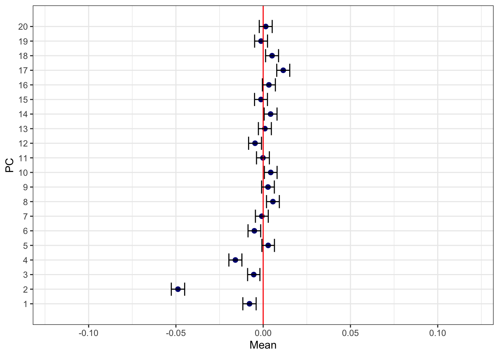
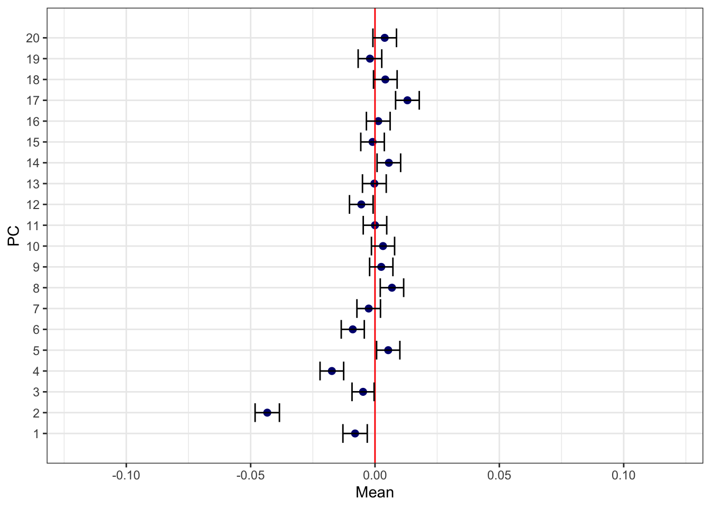
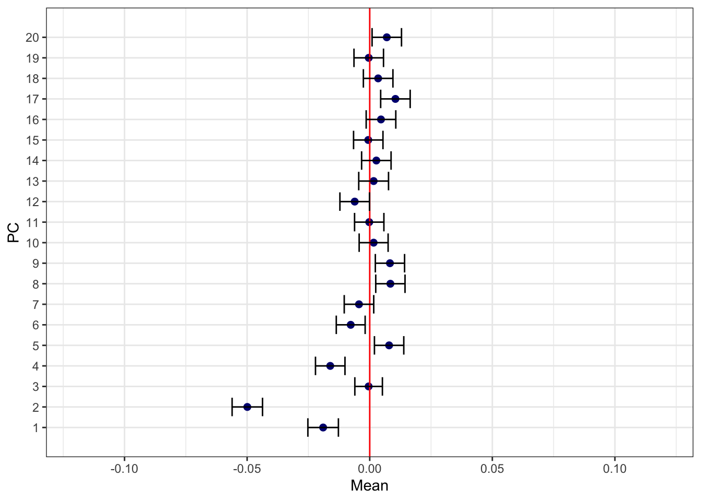
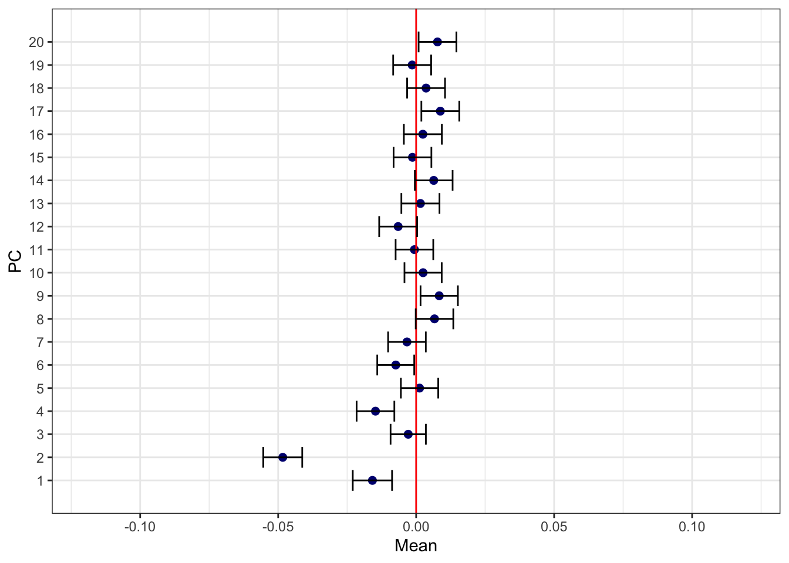
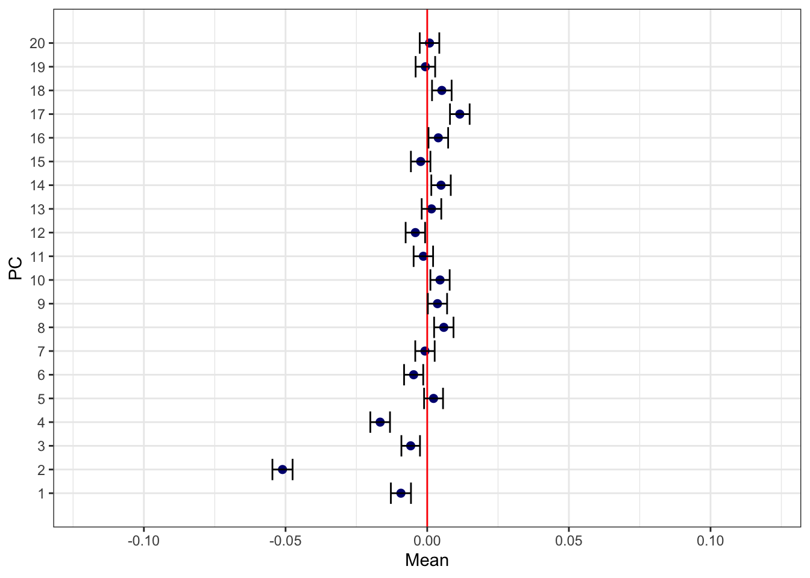
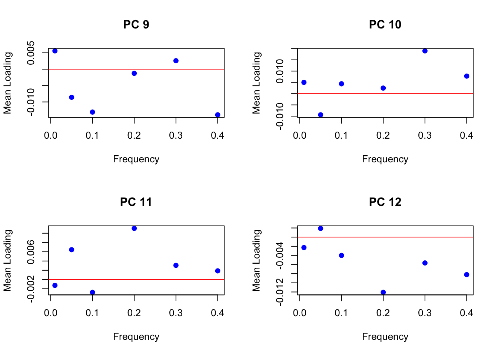
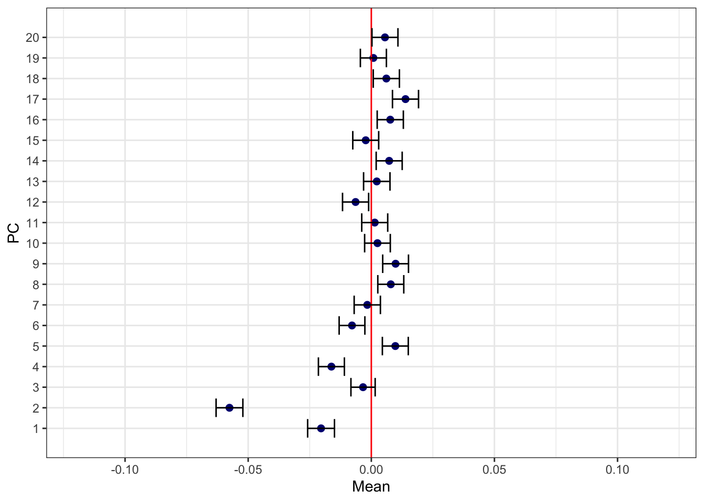

Stratification
Jennifer Blanc
2/13/2020
Last updated: 2020-04-02
Checks: 7 0
Knit directory: infer_mutational_bias/analysis/
This reproducible R Markdown analysis was created with workflowr (version 1.6.0). The Checks tab describes the reproducibility checks that were applied when the results were created. The Past versions tab lists the development history.
Great! Since the R Markdown file has been committed to the Git repository, you know the exact version of the code that produced these results.
Great job! The global environment was empty. Objects defined in the global environment can affect the analysis in your R Markdown file in unknown ways. For reproduciblity it’s best to always run the code in an empty environment.
The command set.seed(20191108) was run prior to running the code in the R Markdown file. Setting a seed ensures that any results that rely on randomness, e.g. subsampling or permutations, are reproducible.
Great job! Recording the operating system, R version, and package versions is critical for reproducibility.
Nice! There were no cached chunks for this analysis, so you can be confident that you successfully produced the results during this run.
Great job! Using relative paths to the files within your workflowr project makes it easier to run your code on other machines.
Great! You are using Git for version control. Tracking code development and connecting the code version to the results is critical for reproducibility. The version displayed above was the version of the Git repository at the time these results were generated.
Note that you need to be careful to ensure that all relevant files for the analysis have been committed to Git prior to generating the results (you can use wflow_publish or wflow_git_commit). workflowr only checks the R Markdown file, but you know if there are other scripts or data files that it depends on. Below is the status of the Git repository when the results were generated:
Ignored files:
Ignored: .DS_Store
Ignored: .Rhistory
Ignored: .Rproj.user/
Ignored: .snakemake/conda-archive/
Ignored: .snakemake/conda/
Ignored: .snakemake/locks/
Ignored: .snakemake/shadow/
Ignored: .snakemake/singularity/
Ignored: analysis/.DS_Store
Ignored: code/.DS_Store
Ignored: code/parse_gwas_atlas/.DS_Store
Ignored: code/parse_gwas_atlas_nonsig/.DS_Store
Ignored: data/.ipynb_checkpoints/
Ignored: data/1000G_20101123_v3_GIANT_chr1_23_minimacnamesifnotRS_CEU_MAF0.01/
Ignored: data/47UKBB/
Ignored: data/ALL.chr1.phase3_shapeit2_mvncall_integrated_v5a.20130502.genotypes.EUR/
Ignored: data/BBJ/
Ignored: data/GWAS_ATLAS/
Ignored: data/STRAT/
Ignored: data/UKBB/
Ignored: output/.DS_Store
Ignored: output/47UKBB/
Ignored: output/BBJ/.DS_Store
Ignored: output/GWAS_ATLAS/
Ignored: output/STRAT/
Ignored: output/UKBB/.DS_Store
Untracked files:
Untracked: .snakemake/log/2020-03-23T164719.122778.snakemake.log
Untracked: .snakemake/log/2020-03-23T164841.172341.snakemake.log
Untracked: .snakemake/log/2020-03-23T165052.235224.snakemake.log
Untracked: .snakemake/log/2020-03-23T173201.671245.snakemake.log
Untracked: .snakemake/log/2020-03-23T190924.512591.snakemake.log
Untracked: .snakemake/log/2020-03-23T194341.864454.snakemake.log
Untracked: .snakemake/log/2020-03-24T091905.302205.snakemake.log
Untracked: .snakemake/log/2020-03-24T092201.882781.snakemake.log
Untracked: .snakemake/log/2020-03-24T092404.171989.snakemake.log
Untracked: .snakemake/log/2020-03-24T092428.802361.snakemake.log
Untracked: .snakemake/log/2020-03-24T093017.568005.snakemake.log
Untracked: .snakemake/log/2020-03-24T093241.050903.snakemake.log
Untracked: .snakemake/log/2020-03-24T093254.384314.snakemake.log
Untracked: .snakemake/log/2020-03-24T093258.136407.snakemake.log
Untracked: .snakemake/log/2020-03-24T093449.542770.snakemake.log
Untracked: .snakemake/log/2020-03-24T111104.620227.snakemake.log
Untracked: .snakemake/log/2020-03-24T111633.863041.snakemake.log
Untracked: .snakemake/log/2020-03-24T111701.823844.snakemake.log
Untracked: .snakemake/log/2020-03-24T152044.472618.snakemake.log
Untracked: .snakemake/log/2020-03-24T152202.883346.snakemake.log
Untracked: .snakemake/log/2020-03-24T152218.356089.snakemake.log
Untracked: .snakemake/log/2020-03-24T152224.553347.snakemake.log
Untracked: .snakemake/log/2020-03-24T152253.175681.snakemake.log
Untracked: .snakemake/log/2020-03-24T152612.976687.snakemake.log
Untracked: .snakemake/log/2020-03-24T152904.986735.snakemake.log
Untracked: .snakemake/log/2020-03-24T154155.249321.snakemake.log
Untracked: .snakemake/log/2020-03-24T154220.752872.snakemake.log
Untracked: .snakemake/log/2020-03-24T154225.402696.snakemake.log
Untracked: .snakemake/log/2020-03-24T154242.303180.snakemake.log
Untracked: .snakemake/log/2020-03-24T154540.706170.snakemake.log
Untracked: .snakemake/log/2020-03-24T154744.109794.snakemake.log
Untracked: .snakemake/log/2020-03-24T154756.043621.snakemake.log
Untracked: .snakemake/log/2020-03-24T155047.465119.snakemake.log
Untracked: .snakemake/log/2020-03-24T155100.393951.snakemake.log
Untracked: .snakemake/log/2020-03-24T155721.217180.snakemake.log
Untracked: .snakemake/log/2020-03-24T155802.251555.snakemake.log
Untracked: .snakemake/log/2020-03-24T155823.527017.snakemake.log
Untracked: .snakemake/log/2020-03-24T160158.325053.snakemake.log
Untracked: .snakemake/log/2020-03-24T160554.632453.snakemake.log
Untracked: .snakemake/log/2020-03-24T160813.358275.snakemake.log
Untracked: .snakemake/log/2020-03-24T161022.670871.snakemake.log
Untracked: .snakemake/log/2020-03-24T161257.193338.snakemake.log
Untracked: .snakemake/log/2020-03-30T171337.338623.snakemake.log
Untracked: .snakemake/metadata/b3V0cHV0L0dXQVNfQVRMQVMvZXZvX2FkZGVkL0NBRF8zOTI1LTAuMDAwMV9ldm8udHh0
Untracked: .snakemake/metadata/b3V0cHV0L0dXQVNfQVRMQVMvZXZvX2FkZGVkL1QyRF80MDg1LTAuMDAwMV9ldm8udHh0
Untracked: .snakemake/metadata/b3V0cHV0L0dXQVNfQVRMQVMvZXZvX2FkZGVkL1VDXzIwMzAtMC4wMDAxX2V2by50eHQ=
Untracked: .snakemake/metadata/b3V0cHV0L0dXQVNfQVRMQVMvZXZvX2FkZGVkL2hlaWdodF8xNDItMC4wMDAxX2V2by50eHQ=
Untracked: .snakemake/metadata/b3V0cHV0L0dXQVNfQVRMQVMvZXZvX2FkZGVkL3NjaGl6b3BocmVuaWFfMzk4Mi0wLjAwMDFfZXZvLnR4dA==
Untracked: .snakemake/metadata/b3V0cHV0L0dXQVNfQVRMQVMvcGFyc2VkX2d3YXMvQ0FEXzM5MjVfMC4wMDAxX3BhcnNlZC50eHQ=
Untracked: .snakemake/metadata/b3V0cHV0L0dXQVNfQVRMQVMvcGFyc2VkX2d3YXMvVDJEXzQwODVfMC4wMDAxX3BhcnNlZC50eHQ=
Untracked: .snakemake/metadata/b3V0cHV0L0dXQVNfQVRMQVMvcGFyc2VkX2d3YXMvVUNfMjAzMF8wLjAwMDFfcGFyc2VkLnR4dA==
Untracked: .snakemake/metadata/b3V0cHV0L0dXQVNfQVRMQVMvcGFyc2VkX2d3YXMvaGVpZ2h0XzE0Ml8wLjAwMDFfcGFyc2VkLnR4dA==
Untracked: .snakemake/metadata/b3V0cHV0L0dXQVNfQVRMQVMvcGFyc2VkX2d3YXMvc2NoaXpvcGhyZW5pYV8zOTgyXzAuMDAwMV9wYXJzZWQudHh0
Untracked: .snakemake/metadata/b3V0cHV0L0dXQVNfQVRMQVMvcHJ1bmVkL0NBRF8zOTI1XzAuMDAwMS5wcnVuZS5pbg==
Untracked: .snakemake/metadata/b3V0cHV0L0dXQVNfQVRMQVMvcHJ1bmVkL1QyRF80MDg1XzAuMDAwMS5wcnVuZS5pbg==
Untracked: .snakemake/metadata/b3V0cHV0L0dXQVNfQVRMQVMvcHJ1bmVkL1VDXzIwMzBfMC4wMDAxLnBydW5lLmlu
Untracked: .snakemake/metadata/b3V0cHV0L0dXQVNfQVRMQVMvcHJ1bmVkL2hlaWdodF8xNDJfMC4wMDAxLnBydW5lLmlu
Untracked: .snakemake/metadata/b3V0cHV0L0dXQVNfQVRMQVMvcHJ1bmVkL3NjaGl6b3BocmVuaWFfMzk4Ml8wLjAwMDEucHJ1bmUuaW4=
Untracked: .snakemake/scripts/tmp7997be50.get_evolutionary_information_from_1kg_GWAS_ATLAS.py
Untracked: analysis/test.Rmd
Untracked: code/parse_gwas_atlas_nonsig/height_142.R
Untracked: code/rsID_Pos_conversion.py
Untracked: code/rsID_Pos_conversion.py~
Unstaged changes:
Modified: .snakemake/metadata/b3V0cHV0L1NUUkFUL3BydW5lZC9jaHIxX0VVUl8wLjA1LmVpZ2VudmVjLnZhci5EQS5wcnVuZS5pbg==
Modified: .snakemake/metadata/b3V0cHV0L1NUUkFUL3BydW5lZC9jaHIxX0VVUl8wLjAxLmVpZ2VudmVjLnZhci5EQS5wcnVuZS5pbg==
Modified: .snakemake/metadata/b3V0cHV0L1NUUkFUL3BydW5lZC9jaHIxX0VVUl8wLjEuZWlnZW52ZWMudmFyLkRBLnBydW5lLmlu
Modified: .snakemake/metadata/b3V0cHV0L1NUUkFUL3BydW5lZC9jaHIxX0VVUl8wLjIuZWlnZW52ZWMudmFyLkRBLnBydW5lLmlu
Modified: .snakemake/metadata/b3V0cHV0L1NUUkFUL3BydW5lZC9jaHIxX0VVUl8wLjMuZWlnZW52ZWMudmFyLkRBLnBydW5lLmlu
Modified: .snakemake/metadata/b3V0cHV0L1NUUkFUL3BydW5lZC9jaHIxX0VVUl8wLjQuZWlnZW52ZWMudmFyLkRBLnBydW5lLmlu
Modified: analysis/GWAS_ATLAS_results.Rmd
Modified: analysis/shift_GWAS_ATLAS.Rmd
Modified: code/parse_gwas_atlas_nonsig/CAD_3925.R
Modified: code/parse_gwas_atlas_nonsig/T2D_4085.R
Modified: code/parse_gwas_atlas_nonsig/UC_2030.R
Modified: code/parse_gwas_atlas_nonsig/schizophrenia_3982.R
Modified: snakefile
Modified: snakefile~
Note that any generated files, e.g. HTML, png, CSS, etc., are not included in this status report because it is ok for generated content to have uncommitted changes.
These are the previous versions of the R Markdown and HTML files. If you’ve configured a remote Git repository (see ?wflow_git_remote), click on the hyperlinks in the table below to view them.
| File | Version | Author | Date | Message |
|---|---|---|---|---|
| Rmd | ad99eff | jgblanc | 2020-04-02 | added whole genome |
| html | ebb68f0 | jgblanc | 2020-03-23 | Build site. |
| Rmd | 815d240 | jgblanc | 2020-03-23 | added CI |
| Rmd | 2182bdf | jgblanc | 2020-03-20 | changes |
| html | 9997d1e | jgblanc | 2020-03-10 | Build site. |
| Rmd | 3bae1e0 | jgblanc | 2020-03-10 | added freq Strat |
| Rmd | 6d9fe78 | jgblanc | 2020-03-05 | more stuff |
| html | 04abf02 | jgblanc | 2020-02-26 | Build site. |
| Rmd | 9e721a3 | jgblanc | 2020-02-26 | Added PCA results |
library(ggplot2)
library(data.table)
library(dplyr)
library(ggpubr)Intro
Here we are interested in detecting the correlation of derived alleles and individual level PCs. Recall that the singular value decomposition of the genotype matrix can be written as:
\[G_{n\times L} = U_{n \times n} \space \Lambda_{n \times n}^{1/2} \space V_{n \times L}\]
Here G is the genotype matrix. The columns of \(U\) are the left Eigenvectors, the rows of of \(V\) are the right eigenvectors and the diagonals of \(\Lambda^{1/2}\) are the square root of the eigenvalues. We can connect this to the eigen decomposition of the genotype covariance matrix:
\[K_{n\times n} = GG^T = U \Lambda^{1/2}V \space G^T\] \[ = U \Lambda^{1/2}V \space V^T\Lambda^{1/2}U^T\] \[ = U \Lambda^{1/2} I \Lambda^{1/2}U^T\] \[ = U_{n \times n} \Lambda_{n \times n} U^T_{n \times n}\]
Here we are generating the square covariance matrix \(K\) by multiplying \(G G^T\). Now we can substitute the SVD decomposition of \(G\) from above. We can also transpose this SVD to get \(G^T\). Finally we can cancel things out until we get \(U \Lambda U^T\), the eigen decomposition. Here \(U\) (the same as above) contains the eigenvectors in the columns and the diagonals have the eigen values (amount of variance explained by each eigenvector). An important thing to remember is that these eigenvectors describe the axes of variance for the individuals, not SNPs.
Similarly we can write the LD matrix, \(R\) in terms of its SVD components:
\[R_{L\times L} = G^TG\] \[ = V^T \Lambda^{1/2} U^T \space U \Lambda^{1/2}V\] \[ = V_{L \times n}^T \Lambda_{n \times n}V_{n \times L}\]
Here we are interested in the right eigenvectors (the columns of \(V^T\)) that represent the correlation of each SNP with the individual eigenvector. In other words, the covariance of SNP \(l\) with the an individual eigenvector \(k\) is given by the dot product of the eigenvector and the genotypes at the SNP:
\[\vec{U_k} \cdot \vec{g_l} = V_{k,l}\]
These \(V_{k,l}\) entries represent the correlation of each SNP with the individual PC, also called the SNP “loadings”. Here we are interested if derived alleles are correlated with PC’s in the data set. For instance, the first PC in the 1kg EUR individuals corresponds geographically to the latitude. We are interested in the sum of the SNP loadings for this PC where the loading is positive if the coded allele is derived and negative if the coded allele is ancestral. This will tell us if there is a relationship between derived alleles and this PC (if there is no relationship then the sum is 0).
Method
- Took 1kg BCF files from the 4th floor comp bio data
- Used plink to run PCA on only the EUR samples (n = 503)
plink -bcf ../../../data/1kg/bcf/ALL.chr1.phase3_shapeit2_mvncall_integrated_v5.20130502.genotypes.bcf –keep ../../../data/1kg/bcf/EUR_IDS.txt –double-id –pca var-wts –out ../output/PCA/chr1_EUR –allow-extra-chr
- Plink outputs the SNP “loadings” for the first 20 PC’s in an .eigenvec.var file
- I used the 1kg_snps.tsv from Joe to add a column to the .eigenvec.var that says 1 if the coded allele (A2) is derived and -1 if the coded allele is ancestral. I was only able to annotate SNPs that had rsID’s and had derived/ancestral info in the table - the rest have NA in that column.
- I pulled out the SNPs with D/A info from the 1kG files and did LD pruning on these SNPs using plink –indep-pairwise 50 5 0.05
Get ID’s of European individuals
pop_info <- fread("../data/STRAT/20130606_sample_info.csv")
EUR <- pop_info %>% filter(Population %in% c("CEU", "TSI", "FIN", "GBR","IBS"))
id_list <- cbind(0,EUR$Sample)
id_only <- cbind(EUR$Sample,EUR$Sample)
#write.table(id_only, "../data/STRAT/EUR_IDS.txt", row.names = F, quote = F, col.names = F)PCA
vecs <- fread("../data/STRAT/test1_all_0.01.eigenvec")
pop_info <- fread("../data/STRAT/20130606_sample_info.csv")
dat <- inner_join(vecs, pop_info, by = c("V2"= "Sample"))
p1 <- ggplot(data = dat, aes(x=V3, y=V4, color = Population)) + geom_point() + xlab("PC1") + ylab("PC2")
p2 <- ggplot(data = dat, aes(x=V5, y=V6, color = Population)) + geom_point() + xlab("PC3") + ylab("PC4")
p3 <- ggplot(data = dat, aes(x=V7, y=V8, color = Population)) + geom_point() + xlab("PC5") + ylab("PC6")
p4 <- ggplot(data = dat, aes(x=V9, y=V10, color = Population)) + geom_point() + xlab("PC7") + ylab("PC8")
ggarrange(p1,p2,p3,p4, common.legend = T)
| Version | Author | Date |
|---|---|---|
| 04abf02 | jgblanc | 2020-02-26 |
SNP Loadings
MAF filter 0.01 (n = 9755877, pruned = 65370)
loading <- fread("../data/STRAT/EUR_0.01_evo.txt")
loading <- loading %>% na.omit() # Get rid of no info (DA) SNPs
pruned <- fread("../data/STRAT/EUR_0.01.eigenvec.var.DA.prune.in", header = F)
loading <- left_join(pruned,loading, by = c("V1"="V2"))
only_num <- loading[,5:24]
sums <- colMeans(only_num, na.rm = T)
stan_devs <- apply(only_num, 2, sd)
lower_bound <- sums - (1.960 * (stan_devs / sqrt(nrow(pruned))))
upper_bound <- sums + (1.960 * (stan_devs / sqrt(nrow(pruned))))
df_0.01 <- as.data.frame(cbind(sums,seq(1,20), lower_bound, upper_bound))
pl_0.01 <- ggplot(df_0.01, aes(x=sums,y=V2)) + geom_point(size = 2, color = "navy") + geom_vline(xintercept = 0, color = "red") + ylab("PC") + scale_y_continuous(minor_breaks = seq(1 , 20, 1), breaks = seq(1, 20, 1)) + xlab("Mean") + theme_bw() + xlim(-0.12,0.12) + geom_errorbarh(aes(xmin = lower_bound, xmax = upper_bound))
colnames(df_0.01) <- c("0.01", "V2")
pl_0.01
MAF filter 0.05 (n=6983938, pruned = 45803)
loading <- fread("../data/STRAT/EUR_0.05_evo.txt")
loading <- loading %>% na.omit() # Get rid of no info (DA) SNPs
pruned <- fread("../data/STRAT/EUR_0.05.eigenvec.var.DA.prune.in", header = F)
loading <- left_join(pruned,loading, by = c("V1"="V2"))
only_num <- loading[,5:24]
sums <- colMeans(only_num, na.rm = T)
stan_devs <- apply(only_num, 2, sd)
lower_bound <- sums - (1.960 * (stan_devs / sqrt(nrow(pruned))))
upper_bound <- sums + (1.960 * (stan_devs / sqrt(nrow(pruned))))
df_0.05 <- as.data.frame(cbind(sums,seq(1,20), lower_bound, upper_bound))
pl_0.05 <- ggplot(df_0.05, aes(x=sums,y=V2)) + geom_point(size = 2, color = "navy") + geom_vline(xintercept = 0, color = "red") + ylab("PC") + scale_y_continuous(minor_breaks = seq(1 , 20, 1), breaks = seq(1, 20, 1)) + xlab("Mean") + theme_bw() + xlim(-0.12,0.12) + geom_errorbarh(aes(xmin = lower_bound, xmax = upper_bound))
colnames(df_0.05) <- c("0.05", "V2")
pl_0.05
MAF filter 0.1 (n = 5608165, pruned = 41521)
loading <- fread("../data/STRAT/EUR_0.1_evo.txt")
loading <- loading %>% na.omit() # Get rid of no info (DA) SNPs
pruned <- fread("../data/STRAT/EUR_0.1.eigenvec.var.DA.prune.in", header = F)
loading <- left_join(pruned,loading, by = c("V1"="V2"))
only_num <- loading[,5:24]
sums <- colMeans(only_num, na.rm = T)
stan_devs <- apply(only_num, 2, sd)
lower_bound <- sums - (1.960 * (stan_devs / sqrt(nrow(pruned))))
upper_bound <- sums + (1.960 * (stan_devs / sqrt(nrow(pruned))))
df_0.1 <- as.data.frame(cbind(sums,seq(1,20), lower_bound, upper_bound))
pl_0.1 <- ggplot(df_0.1, aes(x=sums,y=V2)) + geom_point(size = 2, color = "navy") + geom_vline(xintercept = 0, color = "red") + ylab("PC") + scale_y_continuous(minor_breaks = seq(1 , 20, 1), breaks = seq(1, 20, 1)) + xlab("Mean") + theme_bw() + xlim(-0.12,0.12) + geom_errorbarh(aes(xmin = lower_bound, xmax = upper_bound))
colnames(df_0.1) <- c("0.1", "V2")
pl_0.1
MAF filter 0.2 (n=3787677, pruned = 36086)
loading <- fread("../data/STRAT/EUR_0.2_evo.txt")
loading <- loading %>% na.omit() # Get rid of no info (DA) SNPs
pruned <- fread("../data/STRAT/EUR_0.2.eigenvec.var.DA.prune.in", header = F)
loading <- left_join(pruned,loading, by = c("V1"="V2"))
only_num <- loading[,5:24]
sums <- colMeans(only_num, na.rm = T)
stan_devs <- apply(only_num, 2, sd)
lower_bound <- sums - (1.960 * (stan_devs / sqrt(nrow(pruned))))
upper_bound <- sums + (1.960 * (stan_devs / sqrt(nrow(pruned))))
df_0.2 <- as.data.frame(cbind(sums,seq(1,20), lower_bound, upper_bound))
pl_0.2 <- ggplot(df_0.2, aes(x=sums,y=V2)) + geom_point(size = 2, color = "navy") + geom_vline(xintercept = 0, color = "red") + ylab("PC") + scale_y_continuous(minor_breaks = seq(1 , 20, 1), breaks = seq(1, 20, 1)) + xlab("Mean") + theme_bw() + xlim(-0.12,0.12) + geom_errorbarh(aes(xmin = lower_bound, xmax = upper_bound))
colnames(df_0.2) <- c("0.2", "V2")
pl_0.2
MAF filter 0.3 (n=2401987, pruned = 31059)
loading <- fread("../data/STRAT/EUR_0.3_evo.txt")
loading <- loading %>% na.omit() # Get rid of no info (DA) SNPs
pruned <- fread("../data/STRAT/EUR_0.3.eigenvec.var.DA.prune.in", header = F)
loading <- left_join(pruned,loading, by = c("V1"="V2"))
only_num <- loading[,5:24]
sums <- colMeans(only_num, na.rm = T)
stan_devs <- apply(only_num, 2, sd)
lower_bound <- sums - (1.960 * (stan_devs / sqrt(nrow(pruned))))
upper_bound <- sums + (1.960 * (stan_devs / sqrt(nrow(pruned))))
df_0.3 <- as.data.frame(cbind(sums,seq(1,20), lower_bound, upper_bound))
pl_0.3 <- ggplot(df_0.3, aes(x=sums,y=V2)) + geom_point(size = 2, color = "navy") + geom_vline(xintercept = 0, color = "red") + ylab("PC") + scale_y_continuous(minor_breaks = seq(1 , 20, 1), breaks = seq(1, 20, 1)) + xlab("Mean") + theme_bw() + xlim(-0.12,0.12) + geom_errorbarh(aes(xmin = lower_bound, xmax = upper_bound))
colnames(df_0.3) <- c("0.3", "V2")
pl_0.3
MAF filter 0.4 (n=1172620, pruned = 24810)
loading <- fread("../data/STRAT/EUR_0.4_evo.txt")
loading <- loading %>% na.omit() # Get rid of no info (DA) SNPs
pruned <- fread("../data/STRAT/EUR_0.4.eigenvec.var.DA.prune.in", header = F)
loading <- left_join(pruned,loading, by = c("V1"="V2"))
only_num <- loading[,5:24]
sums <- colMeans(only_num, na.rm = T)
stan_devs <- apply(only_num, 2, sd)
lower_bound <- sums - (1.960 * (stan_devs / sqrt(nrow(pruned))))
upper_bound <- sums + (1.960 * (stan_devs / sqrt(nrow(pruned))))
df_0.4 <- as.data.frame(cbind(sums,seq(1,20), lower_bound, upper_bound))
pl_0.4 <- ggplot(df_0.4, aes(x=sums,y=V2)) + geom_point(size = 2, color = "navy") + geom_vline(xintercept = 0, color = "red") + ylab("PC") + scale_y_continuous(minor_breaks = seq(1 , 20, 1), breaks = seq(1, 20, 1)) + xlab("Mean") + theme_bw() + xlim(-0.12,0.12) + geom_errorbarh(aes(xmin = lower_bound, xmax = upper_bound))
colnames(df_0.4) <- c("0.4", "V2")
pl_0.4
df <- cbind(df_0.01[,1], df_0.05[,1], df_0.1[,1], df_0.2[,1], df_0.3[,1], df_0.4[,1])
par(mfrow = c(2,2))
for(i in 1:4) {
plot(c(0.01,0.05,0.1,0.2,0.3,0.4), df[i,], col = "blue", pch = 19, xlab = "Frequency", ylab = "Mean Loading")
title(main = paste0("PC ", i))
abline(a=0,b=0, col = "red")
}
par(mfrow = c(2,2))
for(i in 5:8) {
plot(c(0.01,0.05,0.1,0.2,0.3,0.4), df[i,], col = "blue", pch = 19, xlab = "Frequency", ylab = "Mean Loading")
title(main = paste0("PC ", i))
abline(a=0,b=0, col = "red")
}
par(mfrow = c(2,2))
for(i in 9:12) {
plot(c(0.01,0.05,0.1,0.2,0.3,0.4), df[i,], col = "blue", pch = 19, xlab = "Frequency", ylab = "Mean Loading")
title(main = paste0("PC ", i))
abline(a=0,b=0, col = "red")
}
par(mfrow = c(2,2))
for(i in 13:16) {
plot(c(0.01,0.05,0.1,0.2,0.3,0.4), df[i,], col = "blue", pch = 19, xlab = "Frequency", ylab = "Mean Loading")
title(main = paste0("PC ", i))
abline(a=0,b=0, col = "red")
}
par(mfrow = c(2,2))
for(i in 17:20) {
plot(c(0.01,0.05,0.1,0.2,0.3,0.4), df[i,], col = "blue", pch = 19, xlab = "Frequency", ylab = "Mean Loading")
title(main = paste0("PC ", i))
abline(a=0,b=0, col = "red")
}
sessionInfo()R version 3.6.2 (2019-12-12)
Platform: x86_64-apple-darwin15.6.0 (64-bit)
Running under: macOS High Sierra 10.13.6
Matrix products: default
BLAS: /Library/Frameworks/R.framework/Versions/3.6/Resources/lib/libRblas.0.dylib
LAPACK: /Library/Frameworks/R.framework/Versions/3.6/Resources/lib/libRlapack.dylib
locale:
[1] en_US.UTF-8/en_US.UTF-8/en_US.UTF-8/C/en_US.UTF-8/en_US.UTF-8
attached base packages:
[1] stats graphics grDevices utils datasets methods base
other attached packages:
[1] ggpubr_0.2.5 magrittr_1.5 dplyr_0.8.4 data.table_1.12.8
[5] ggplot2_3.2.1 workflowr_1.6.0
loaded via a namespace (and not attached):
[1] Rcpp_1.0.3 compiler_3.6.2 pillar_1.4.3 later_1.0.0
[5] git2r_0.26.1 tools_3.6.2 digest_0.6.25 evaluate_0.14
[9] lifecycle_0.1.0 tibble_2.1.3 gtable_0.3.0 pkgconfig_2.0.3
[13] rlang_0.4.4 yaml_2.2.1 xfun_0.12 gridExtra_2.3
[17] withr_2.1.2 stringr_1.4.0 knitr_1.28 fs_1.3.1
[21] cowplot_1.0.0 rprojroot_1.3-2 grid_3.6.2 tidyselect_1.0.0
[25] glue_1.3.1 R6_2.4.1 rmarkdown_2.1 farver_2.0.3
[29] purrr_0.3.3 whisker_0.4 backports_1.1.5 scales_1.1.0
[33] promises_1.1.0 htmltools_0.4.0 assertthat_0.2.1 colorspace_1.4-1
[37] ggsignif_0.6.0 httpuv_1.5.2 labeling_0.3 stringi_1.4.6
[41] lazyeval_0.2.2 munsell_0.5.0 crayon_1.3.4